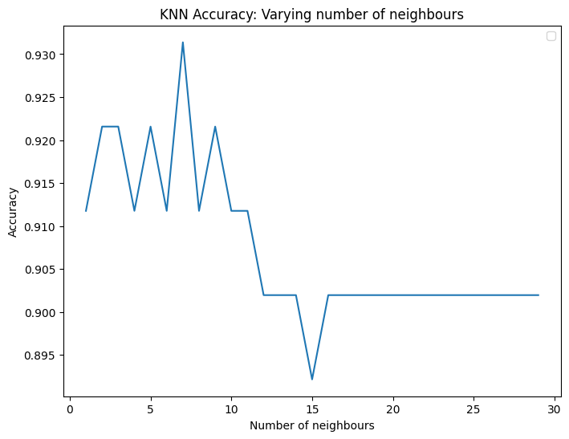

#negative_words file
df = pd.read_csv('negative_words.csv')
df = df.drop(columns=['original']) #drop it since it contains the concept with an * in it
neg_words = []
for _, row in df.iterrows():
for item in row:
if pd.notnull(item):
neg_words.append(item)Classifier
This is the class that creates the dictionary model
#Drop duplicates in neg_words:
neg_words = list(set(neg_words))
len(neg_words)1599#moral_foundations_dictionary file:
df = pd.read_csv('moral_foundations_dictionary_1.0.csv')
df = df[['categories','word_examples']]
virtue = []
vice = []
for _, row in df.iterrows():
if pd.notnull(row['word_examples']):
words = row['word_examples'].split(',')
if 'Virtue' in row['categories']:
virtue.extend(words)
elif 'Vice' in row['categories']:
vice.extend(words)
else:
print(words)['moralidad']
['moral']
['etica']
['etico']
['principios']
['valores']
['bueno', ' buena']
['bondadoso']
['correcto']
['erroneo', ' equivocado', ' incorrecto', ' malo']
['justicia']
['fechoria', ' pecado', ' indebido']
['virtud']
['vicioso']
['moralidad']
['etica']virtue.extend(['moralidad','moral','etica','etico','principios','valores','bueno','buena','bondadoso','correcto','justicia','virtud','moralidad','etica'])
vice.extend(['erroneo','equivocado','incorrecto','malo','fechoria','pecado','indebido','vicioso'])
#Drop duplicates in virtue and vice:
virtue = list(set(virtue))
vice = list(set(vice))
print('vice examples: ', vice[:10])
print('virtue examples: ', virtue[:10])
print('vice length: ', len(vice))
print('virtue length: ', len(virtue))vice examples: ['mientes', 'extrañando', ' disociable', 'confrontar', 'atrocidad', 'insistir ', 'herido', 'salvaje', 'esceptico', 'pateticos']
virtue examples: [' beneficiar', 'maternal', 'seguir', ' ecuanimidad', 'supremacía', 'patriotico', ' justicia', 'refugiar', 'paternal', 'estatus']
vice length: 1719
virtue length: 217We have a bigger proportion of vice words which may have an important effect on the tagging task usin KNN
#Load the embeddings to data frame:
def load_embeddings(file_path):
word_to_vec = {}
with open(file_path, 'r', encoding='utf-8') as file:
for line in file:
values = line.split()
word = values[0]
vector = np.array(values[1:], dtype='float32')
word_to_vec[word] = vector
return word_to_vec
word_to_vec = load_embeddings('vectorspol.txt')one = set(vice)
two = set(neg_words)
vice = list(one.union(two))# Total words
print(len(vice)+len(virtue))1936words = vice + virtue
words = set(words)Classifier
Classifier ()
Initialize self. See help(type(self)) for accurate signature.
def list_to_vec(vice, virtue, word_to_vec):
'''Returns the vector representation of a list of words in a df'''
data = {'word': [], 'vector': [], 'category': []}
for word in vice:
if word in word_to_vec.keys():
data['word'].append(word)
data['vector'].append(word_to_vec[word])
data['category'].append(0.0) #vice will be represented as 0
else:
data['word'].append(word)
data['vector'].append(np.nan)
data['category'].append(0.0)
for word in virtue:
if word in word_to_vec.keys():
data['word'].append(word)
data['vector'].append(word_to_vec[word])
data['category'].append(1.0) #virtue will be represented as 1
else:
data['word'].append(word)
data['vector'].append(np.nan)
data['category'].append(1.0)
df = pd.DataFrame(data)
return df
df = list_to_vec(vice,virtue,word_to_vec)
total = len(df)
print('Total words: ',total)
df.dropna(inplace=True)
df.reset_index(inplace=True,drop=True)
print('Total words after dropping NaN: ',len(df))
print('∆: ',total-len(df))
print('∆%:', round((total-len(df))/total*100,2) )
dfTotal words: 1936
Total words after dropping NaN: 1015
∆: 921
∆%: 47.57| word | vector | category | |
|---|---|---|---|
| 0 | desintegrado | [0.1409, -0.281743, -0.021933, 0.063962, 0.363... | 0.0 |
| 1 | confrontar | [0.52358, -0.042034, 0.196349, -0.10303, -0.01... | 0.0 |
| 2 | arruina | [0.440164, -0.520216, 0.281926, 0.316728, 0.11... | 0.0 |
| 3 | herido | [0.435823, -0.5486, 0.689534, 0.293683, 0.1012... | 0.0 |
| 4 | agresiva | [0.123496, -0.358881, 0.211074, 0.103301, 0.04... | 0.0 |
| ... | ... | ... | ... |
| 1010 | castigo | [0.300206, 0.182386, -0.113264, 0.146073, -0.6... | 1.0 |
| 1011 | etica | [-0.098628, 0.139114, 0.198292, -0.141415, 0.2... | 1.0 |
| 1012 | ritual | [0.383331, -0.649981, 0.623369, -0.128588, -0.... | 1.0 |
| 1013 | empatia | [-0.079985, 0.049216, -0.123454, 0.110934, 0.0... | 1.0 |
| 1014 | bueno | [0.717693, 0.01057, 0.502308, 0.411575, -0.427... | 1.0 |
1015 rows × 3 columns
Vice words
df[df['category'] == 0.0]| word | vector | category | |
|---|---|---|---|
| 0 | desintegrado | [0.1409, -0.281743, -0.021933, 0.063962, 0.363... | 0.0 |
| 1 | confrontar | [0.52358, -0.042034, 0.196349, -0.10303, -0.01... | 0.0 |
| 2 | arruina | [0.440164, -0.520216, 0.281926, 0.316728, 0.11... | 0.0 |
| 3 | herido | [0.435823, -0.5486, 0.689534, 0.293683, 0.1012... | 0.0 |
| 4 | agresiva | [0.123496, -0.358881, 0.211074, 0.103301, 0.04... | 0.0 |
| ... | ... | ... | ... |
| 896 | melancolia | [0.100793, 0.07003, -0.095927, -0.148693, -0.4... | 0.0 |
| 897 | decepciona | [0.166685, -0.138134, -0.523206, -0.21429, -0.... | 0.0 |
| 898 | pesimismo | [-0.158406, 0.275918, -0.5823, 0.252241, -0.29... | 0.0 |
| 899 | bastarda | [-0.664042, -0.583431, 0.31007, -0.036613, 0.0... | 0.0 |
| 900 | perversa | [0.062627, -1.33138, 0.117078, -0.129269, -0.0... | 0.0 |
901 rows × 3 columns
Virtue words
df[df['category'] == 1.0].reset_index(drop=True)| word | vector | category | |
|---|---|---|---|
| 0 | maternal | [0.325435, 0.10564, 0.775151, -0.238141, -0.29... | 1.0 |
| 1 | seguir | [0.929292, 0.084175, -0.086734, 0.031077, -0.4... | 1.0 |
| 2 | patriotico | [-0.391148, -0.314462, -0.495306, -0.404786, -... | 1.0 |
| 3 | paternal | [-0.164871, -0.043165, 0.527002, -0.032622, -0... | 1.0 |
| 4 | estatus | [0.195135, 0.061412, 0.429363, 0.509251, -0.02... | 1.0 |
| ... | ... | ... | ... |
| 109 | castigo | [0.300206, 0.182386, -0.113264, 0.146073, -0.6... | 1.0 |
| 110 | etica | [-0.098628, 0.139114, 0.198292, -0.141415, 0.2... | 1.0 |
| 111 | ritual | [0.383331, -0.649981, 0.623369, -0.128588, -0.... | 1.0 |
| 112 | empatia | [-0.079985, 0.049216, -0.123454, 0.110934, 0.0... | 1.0 |
| 113 | bueno | [0.717693, 0.01057, 0.502308, 0.411575, -0.427... | 1.0 |
114 rows × 3 columns
X = np.array(df['vector'].tolist())
print(X)
y = np.array(df['category'].tolist())
print(y)[[ 0.1409 -0.281743 -0.021933 ... 0.102292 0.35555 -0.487593]
[ 0.52358 -0.042034 0.196349 ... 0.283234 0.035956 -0.422202]
[ 0.440164 -0.520216 0.281926 ... -0.381815 -0.04618 -0.25785 ]
...
[ 0.383331 -0.649981 0.623369 ... 0.21622 -0.19366 -0.12253 ]
[-0.079985 0.049216 -0.123454 ... -0.117718 0.042928 -0.343779]
[ 0.717693 0.01057 0.502308 ... -0.425821 0.07154 -0.010166]]
[0. 0. 0. ... 1. 1. 1.]X_train, X_test, y_train, y_test = train_test_split(df['vector'], df['category'], test_size=0.1, random_state=21,stratify=df['category'])
X_train = X_train.to_list()
knn = KNeighborsClassifier(n_neighbors=3)
knn.fit(X_train, y_train)
X_test = X_test.to_list()
print(round(knn.score(X_test, y_test),3))0.922test_accuracies = {}
neighbours = range(1, 30)
for neighbour in neighbours:
knn = KNeighborsClassifier(n_neighbors=neighbour)
knn.fit(X_train, y_train)
test_accuracies[neighbour] = knn.score(X_test, y_test)
plt.figure(figsize=(8,6))
plt.title('KNN Accuracy: Varying number of neighbours')
plt.plot(list(test_accuracies.keys()), list(test_accuracies.values()))
plt.legend()
plt.xlabel('Number of neighbours')
plt.ylabel('Accuracy')
plt.show()
print('Best accuracy and number of neighbours: ', max(test_accuracies.items(), key=lambda x: x[1]))No artists with labels found to put in legend. Note that artists whose label start with an underscore are ignored when legend() is called with no argument.
Best accuracy and number of neighbours: (7, 0.9313725490196079)Using the model to tag adjectives found on media*
Issues to be solved…
knn = KNeighborsClassifier(n_neighbors=5)
knn.fit(X,y)KNeighborsClassifier()In a Jupyter environment, please rerun this cell to show the HTML representation or trust the notebook.
On GitHub, the HTML representation is unable to render, please try loading this page with nbviewer.org.
KNeighborsClassifier()
#Adjs found in comments using spaCy library:
adjs = set()
with open('adjs_comments.txt', 'r', encoding='utf-8') as file:
for line in file:
adjs.add(line.strip())
adjs = list(adjs)
print(adjs[:10])
print(len(adjs))['pobresprianistas', 'pri', 'verdaderas', 'agual', 'mientes', 'nesita', 'hermosa', 'fcg', 'lorenzo', 'prmitido']
1642#Adjs from comments but not in words:
adjs_set = set(adjs)
diference = adjs_set.difference(words)
print(len(diference))
print(diference)1538
{'pobresprianistas', 'pri', 'verdaderas', 'agual', 'nesita', 'hermosa', 'fcg', 'lorenzo', 'prmitido', 'odiado', 'curado', 'neutrales', 'involucrado', 'malditos', 'comercial', 'bende', 'caros', 'electorales', 'mismopero', 'mantenidoscorruptos', 'evitense', 'demas', 'robado', 'exacta', 'aferrado', 'paraditos', 'privilegios', 'pejistas', 'impotente', 'entoloachado', 'pirque', 'sencilla', 'alcaldias', 'campesino', 'mudos', 'by', 'limpia', 'raterossalta', 'incondicionales', 'saqueado', 'opositores', 'ocicon', 'cortos', 'despotas', 'secuestrado', 'calmado', 'profesional', 'deberia', 'capitalista', 'bandido', 'vestidas', 'importantes', 'encubierto', 'fumastes', 'conscientes', 'fregado', 'necesitados', 'amolado', 'ables', 'diputados', 'lleno', 'politicas', 'institucionalizados', 'grandes', 'cercania', 'caro', 'mmmdas', 'interno', 'm@men', 'intachable', 'pagadas', 'alimentos', 'entero', 'apestosas', 'apasear', 'maya', 'creibles', 'pobrecitos', 'basica', 'corrptos', 'trabajadoras', 'veracruz', 'incompetentesmediocres', 'poqiquitos', 'exelente', 'biendolos', 'democratico', 'elbolsillo', 'arrastrados', 'votado', 'publicos', 'salio', 'elhechalo', 'veznobqueda', 'obrigatoria', 'contras', 'estafador', 'engreidos', 'asta', 'llenas', 'agresivos', 'enquistados', 'ormigs', 'honestos', 'actual', 'qnomme', 'ligera', 'representates', 'hechoellos', 'pagado', 'podridos', 'verdespenejo', 'discriminatorio', 'foxcada', 'mediocre', 'primeros', 'espanola', 'soltado', 'unificadorno', 'minima', 'idiotizado', 'municipal', 'peorcito', 'pobres', 'marihuanol', 'hermosos', 'mochada', 'adinerados', 'ningun', 'malevolos', 'acsrreados', 'pertinentes', 'rosas', 'confiable', 'inepto', 'senor', 'industriales', 'honesta', 'maiceado', 'prestigiada', 'debilito', 'privilegiada', 'nazi', 'quemados', 'propuesta', 'adulta', 'decual', 'avbio', 'largo', 'vitacilina', 'oceanica', 'fraudes', 'asquerosasvendidos', 'acrarreador', 'elctoral', 'aferrados', 'insensibles', 'rapaz', 'indibiduo', 'viejio', 'traido', 'demexico', 'igualvendidos', 'sahagun', 'pueblosolo', 'envidiosote', 'lozonso', 'defendidos', 'corta', 'miserables', 'propiaarriba', 'miradas', 'saqueadores', 'acarriada', 'defendiendolos', 'detocs', 'afectada', 'obligados', 'real', 'maldita', 'devores', 'politica', 'europeo', 'huevones', 'unido', 'federal', 'siega', 'cagadas', 'stpdo', 'sicaro', 'graciosos', 'sumado', 'vendepatrias', 'arrugado', 'ratasvendidos', 'trabajador', 'plena', 'quierenestos', 'independientes', 'hijos', 'atarantado', 'mendigos', 'superinteligentisimo', 'media', 'millonarios', 'jamas', 'lindo', 'vivos', 'beneficiados', 'junta', 'purita', 'seco', 'manipulados', 'criado', 'acusalo', 'desinflado', 'legales', 'incondicional', 'quesadapues', 'snganos', 'ofenza', 'quretino', 'grabadora', 'seria', 'plagada', 'presidentes', 'decomiso', 'civil', 'atraves', 'familiar', 'anti', 'avalado', 'partidos', 'increible', 'lunatico', 'crecida', 'electronicos', 'mejor', 'institucionlos', 'facil', 'jajajaja', 'hombreeso', 'libre', 'enganada', 'maximo', 'estadista', 'asustados', 'garrapatas', 'ofendidos', 'verde', 'estepincheviejodecrepitoyanadamasleqedololoco', 'chupado', 'grande', 'alborotada', 'acarreado', 'absoluta', 'mariguanol', 'perversos', 'nuevos', 'enemigos', 'primera', 'dura', 'nueva', 'vidente', 'callado', 'jjjjjjjj', 'amlolo', 'amucha', 'tranquilo', 'mantenido', 'listo', 'ajena', 'huuuleeeerooooo', 'elegido', 'rafas', 'autentico', 'hueca', 'dominguero', 'obradoristas', 'buey', 'pequena', 'seguros', 'adineradas', 'relajate', 'fraudulentas', 'guasolina', 'masoquista', 'hobrador', 'extraordinaria', 'perros', 'lolita', 'decentes', 'anemonas', 'sras', 'bibidores', 'electoral', 'afecto', 'empresariales', 'descansa', 'analfabeta', 'agrada', 'alla', 'especial', 'gusanos', 'quemado', 'interesante', 'delicuentes', 'corruptospor', 'herario', 'secuaces', 'ledio', 'neoliberal', 'venenosas', 'holgazanes', 'punados', 'protejidos', 'sociales', 'valioso', 'mandenidos', 'escalteado', 'tisnaditas', 'tiznado', 'lado', 'personal', 'japonesa', 'cerrada', 'pica', 'jajajaaaaaa', 'pobrecito', 'malas', 'carajos', 'acarreada', 'tranzas', 'llena', 'fuerte', 'paniaguados', 'contradictoriosesas', 'servil', 'srvicente', 'usada', 'deseoso', 'actually', 'comun', 'miedosos', 'parcial', 'indefendible', 'alta', 'muertos', 'locote', 'personales', 'publico', 'inteligentes', 'licenciado', 'natural', 'mundial', 'comparado', 'pallaso', 'engana', 'pruevas', 'callen', 'hambriados', 'popular', 'sinicos', 'chente', 'desbocados', 'incongruente', 'hipocritas', 'agradecida', 'sueldos', 'repudiaria', 'demostrado', 'universal', 'corruptotes', 'demacrado', 'quesada', 'llo', 'dirigido', 'cambiado', 'sabio', 'diferente', 'stiercol', 'solita', 'comosea', 'urgentemente', 'amargadas', 'conplan', 'marranos', 'domesticopobrecitas', 'tramposo', 'vacios', 'mariguas', 'enserio', 'cacomiztles', 'ricos', 'trampososineptos', 'descanse', 'curioso', 'dichos', 'describire', 'maruiguas', 'mera', 'corruption', 'asustas', 'amlono', 'comprados', 'lectorapuro', 'nacional', 'mana', 'verguenzasaludos', 'chole', 'curruptoseso', 'putrefacto', 'hidratados', 'desfasado', 'contundente', 'desapareceresa', 'justas', 'vendidosfuera', 'invasivo', 'excelente', 'morena', 'vjejo', 'duenos', 'disfrazados', 'danado', 'advenedizos', 'ricachones', 'plenos', 'enfermisas', 'inutiles', 'mediana', 'simuladores', 'nacidos', 'reacionea', 'tremens', 'iluso', 'pasadas', 'asolear', 'tercera', 'vista', 'yegaria', 'hartos', 'alto', 'rica', 'verdulera', 'enfada', 'inmensa', 'amexico', 'chiquitos', 'ntro', 'viejo', 'lopitos', 'ponte', 'justos', 'tapendejo', 'renovada', 'vendida', 'poquita', 'maliditos', 'corruptosmercenarios', 'blanquitos', 'vivo', 'baboso', 'humilde', 'menoria', 'delicados', 'decia', 'hocicon', 'endeudado', 'organica', 'pendesta', 'quedaria', 'porinfeliz', 'corruptosy', 'q', 'razonable', 'mentales', 'humanas', 'corruptasos', 'riquillo', 'enjuicien', 'compares', 'alucines', 'importante', 'quieroen', 'solosomos', 'preocupados', 'obvio', 'pitufos', 'electrica', 'acarreas', 'enterados', 'finos', 'inmorales', 'incompetentes', 'vividora', 'harias', 'anciano', 'apatridas', 'chingandoy', 'buen', 'efectiva', 'razistas', 'experto', 'neuliberales', 'corructos', 'acusador', 'defraudadores', 'lanbiscomes', 'tranquila', 'llamado', 'perfecto', 'laserado', 'simple', 'atomica', 'quioere', 'checheas', 'pasados', 'arreglados', 'administradorcillo', 'planeado', 'derecho', 'estupidos', 'participado', 'ratificado', 'mentado', 'marranadas', 'sandeces', 'aaaay', 'severas', 'obligatorio', 'gatos', 'indignos', 'duermete', 'pocas', 'osico', 'cauarta', 'vividor', 'elitistas', 'lencho', 'impuestos', 'arrastrada', 'tiranos', 'propia', 'carino', 'importantisima', 'trasnochado', 'muchisimo', 'burradas', 'armada', 'chistosito', 'cansados', 'familiares', 'estiempo', 'tactica', 'viejas', 'pagada', 'emitidas', 'perotodos', 'aprovechados', 'inevendido', 'clasista', 'narcoas', 'gran', 'infelices', 'ciudadana', 'fertilizante', 'contados', 'claro', 'maiceadas', 'prianistas', 'diles', 'convencidos', 'inteligente', 'rociados', 'verdadera', 'voluntaria', 'etcetera', 'iguales', 'ocupado', 'cansado', 'cobardes', 'askerosas', 'extranjeros', 'complices', 'borregos', 'economica', 'ardido', 'pendejas', 'eline', 'sinico', 'senal', 'america', 'qureo', 'oficial', 'ancianos', 'energetica', 'manoseada', 'engrandecerlos', 'criminales', 'cruptos', 'marguas', 'indescriptibles', 'total', 'cuantos', 'cuscos', 'idiotisado', 'maliada', 'lacras', 'extrema', 'politiqueros', 'mantenidos', 'desfraudado', 'incuriptible', 'amlooo', 'lkenadera', 'antipatriotas', 'chspm', 'ala', 'lencha', 'acareados', 'd', 'irrefutable', 'padres', 'mega', 'blanco', 'etc', 'tipica', 'harto', 'obrera', 'llores', 'friegas', 'orgulloso', 'encabezado', 'corrptisimo', 'muneco', 'elegantes', 'chavorruco', 'sanganos', 'mariguano', 'cabada', 'minimos', 'ridiculos', 'tinoso', 'parientes', 'pagariamos', 'leido', 'viejillo', 'fuelra', 'innecesarios', 'reciente', 'abtidemocraticos', 'defensor', 'corruptelas', 'chapeados', '@uuuuuu', 'proximos', 'omosexual', 'desias', 'necesario', 'positivos', 'plurinominal', 'llenos', 'incomparable', 'intocables', 'doble', 'srpresidente', 'zanganos', 'primero', 'apistelentes', 'saludable', 'nadamas', 'tespetosox', 'aaaarranquense', 'espresidente', 'lavadora(de', 'largas', 'puras', 'rrequerido', 'rateros', 'sumbado', 'mexico', 'pios', 'dadeberia', 'veneficio', 'ganado', 'mieda', 'peca', 'tendenciosas', 'suave', 'cochinada', 'riquillos', 'hade', 'quedado', 'humanitario', 'sinsanoso', 'inestable', 'chingnd', 'pienza', 'vomitivos', 'nesesitamos', 'compradas', 'preso', 'bajo', 'usava', 'apegado', 'auspiciadas', 'imparciales', 'an', 'chin', 'pacifica', 'chachalaco', 'manosos', 'borracho', 'locuas', 'calladito', 'indeseables', 'inmoral', 'tenido', 'nuevas', 'tirado', 'petroleras', 'partodos', 'extrano', 'senil', 'hambrientos', 'compatriotasviva', 'jajakaj', 'l', 'seve', 'puros', 'crrupto', 'igualado', 'vividores', 'conocido', 'rratotassinberguensas', 'paracitos', 'sentados', 'mas', 'recaudados', 'hhuu', 'tambien', 'tremendo', 'ardida', 'valiosas', 'chentebotitas', 'minerales', 'cuasta', 'cochinos', 'integrantes', 'parasitos', 'pequeno', 'aleccionados', 'comprendanlo', 'sheet', 'qeremos', 'ferrocarriles', 'adivino', 'marihuaniado', 'plana', 'felices', 'consec', 'clasistas', 'simexicanos', 'megacorruptos', 'limpio', 'impotenciaque', 'nonesesita', 'trabajadora', 'inquietos', 'lamvehuvos', 'desgrasiado', 'jodidos', 'desvergonzados', 'mayoria', 'democracias', 'afectado', 'valiente', 'viendoesta', 'drogado', 'sinonimos', 'nosotras', 'guero', 'presidentecon', 'delincuentes', 'suficiente', 'traicionera', 'incompetente', 'ternurita', 'pulpos', 'marihuano', 'deveria', 'chacales', 'capaces', 'desgraciados', 'preciopor', 'millonario', 'mariguana', 'tonterias', 'vendidosy', 'gorda', 'caracol', 'respetoviva', 'merecido', 'veandido', 'ratotas', 'nefastas', 'rico', 'democracia', 'bonita', 'verdaderos', 'vejestorios', 'engordado', 'maravilloso', 'pensionados', 'cierto', 'bandidos', 'comprobado', 'rrs', 'electoreros', 'lgualmente', 'prianrede', 'psiquiatrico', 'indigenas', 'pelado', 'ahj', 'unidos', 'nefastos', 'quezada', 'secuestrada', 'enriquecidos', 'cronico', 'corruptisimo', 'tocado', 'prepotentes', 'alcansaria', 'presente', 'acarreados', 'delirante', 'transparente', 'contentos', 'simbergyensas', 'sakeadores', 'chayoteros', 'clarito', 'falsa', 'mismo', 'corruptas', 'vergonzoso', 'coructos', 'amanada', 'conocidos', 'unico', 'civiles', 'incurruptibles', 'senores', 'humano', 'sincero', 'logrosesto', 'ultimo', 'firmes', 'borrachales', 'sinsos', 'marihuana', 'hacersolo', 'compras', 'propios', 'desmemoriados', 'rata', 'unica', 'antidemocratas', 'judicial', 'racistas', 'computadoras', 'mensuales', 'ocultas', 'zocalo', 'cagada', 'serian', 'cubano', 'historico', 'aparescas', 'tronado', 'presidencial', 'agradecidos', 'malditas', 'respetoeste', 'acarrados', 'viva', 'metidos', 'solitos', 'mayor', 'mojadas', 'sordos', 'sencillo', 'urgente', 'verboviva', 'varcel', 'dichola', 'riquito', 'ineptos', 'meadas', 'sucios', 'visto', 'alrevez', 'peo', 'inecesario', 'duro', 'conveneciera', 'campantes', 'excesivos', 'umillados', 'gubernamental', 'nuevo', 'dadiva', 'sentidas', 'nesesitados', 'remoras', 'prianmc', 'inmenso', 'desarrollado', 'corrupto', 'consejero', 'cilencio', 'enojados', 'agradecido', 'ineficiente', 'aburre', 'acompano', 'afectados', 'claras', 'ademas', 'unicos', 'flojos', 'comodinos', 'defendible', 'maligna', 'oportunistas', 'derrotados', 'prieta', 'rapido', 'fecales', 'obrador', 'pelados', 'aereas', 'chupeteadores', 'junto', 'hozico', 'derrotada', 'ivas', 'dios', 'chochea', 'atina', 'parados', 'diria', 'ultima', 'favorecida', 'ex', 'dictador', 'marhuana', 'nesecidada', 'mandilon', 'ponzonosas', 'ine-scrupulosos', 'contrario', 'maltratado', 'asquerosos', 'obsesionado', 'genial', 'larga', 'hdschm', 'digno', 'cerebral', 'insaciables', 'mexicana', 'viejito', 'voluntario', 'amanados', 'huachicolero', 'ensucia', 'transtornado', 'entregista', 'comprada', 'apatrida', 'ladras', 'nuesteos', 'motorolo', 'ultrajada', 'huachicoleras', 'mafiosos', 'opcs', 'laca', 'irrespetuoso', 'coruptos', 'patriastraidores', 'naturales', 'desvergonzado', 'sera', 'vien', 'sandijuelas', 'malvados', 'ultimos', 'operado', 'lamentable', 'pequenos', 'recibido', 'proximo', 'digna', 'hermoso', 'abusivos', 'esquizofrenico', 'encontraras', 'comprueve', 'ratera', 'traicioneros', 'basicas', 'jajajajajjajajajjaajajajjjaajajjaano', 'lorensito', 'economico', 'chulo', 'acabeotros', 'cascarrabias', 'fascistas', 'autoritarios', 'chistoso', 'nopuedo', 'sennofox', 'rrrrratas', 'ficticias', 'precaria', 'malparridos', 'ardidos', 'cdmx', 'estupido', 'querido', 'mendigo', 'pregunteles', 'posible', 'hechos', 'tarugada', 'vicentico', 'vestida', 'martita', 'cuarta', 'hables', 'empresarial', 'botudo', 'masivo', 'traicionero', 'ardor', 'infinitas', 'traicioneras', 'mayores', 'bajos', 'vandidos', 'mariguanete', 'mendiga', 'grandioso', 'iriapero', 'alito', 'alucinado', 'callados', 'buenas', 'seno', 'amloasi', 'cundo', 'infames', 'pagados', 'neoliberales', 'autonomo', 'dekrepito', 'estadodas', 'superiores', 'economicos', 'vende-patrias', 'culeros', 'sometida', 'proximas', 'hbldr', 'oilo', 'pesadas', 'ironia', 'logrado', 'apokono', 'conq', 'italiano', 'mariguanay', 'loquito', 'reales', 'corruptosvendidos', 'ta', 'serviles', 'msrigua', 'grandecito', 'ratasss', 'injustos', 'enves', 'descarados', 'pasado', 'sientes', 'parasito', 'juridica', 'solas', 'pcasi', 'indicado', 'ignorantes', 'playeras', 'incomada', 'maaaa', 'humildes', 'fumovisente', 'solo', 'vacelina', 'cercano', 'jajajajajaja', 'ahihasta', 'fieles', 'humanista', 'desaparecete', 'toncho', 'insecto', 'callese', 'pusilanimes', 'patras', 'bitacilina', 'encarcelado', 'dueno', 'coludidos', 'guaruras', 'generosos', 'sano', 'fuchi', 'menor', 'camisas', 'llevenll', 'agancaso', 'facistas', 'sumidos', 'corajes', 'ventajosos', 'guaraguano', 'atras', 'escandalosa', 'habidos', 'agredidos', 'queles', 'politico', 'msriguana', 'mediera', 'sedientos', 'hambreados', 'molestes', 'maiceados', 'invito', 'prianista', 'combinado', 'ajeno', 'paso', 'torta', 'marihuas', 'acabado', 'expresidentes', 'ajenas', 'buenoaestecabrocontodorespetosiesqueselomeresrcuandolevanaquitarloquerobo', 'botuda', 'archirequetecontracorruptos', 'miadas', 'satrapa', 'convocados', 'psicopata', 'esbirros', 'inconforme', 'inferiores', 'amikos', 'tramposos', 'oyy', 'legitimo', 'calificativos', 'populacho', 'metodos', 'poderosos', 'mesmamente', 'putridos', 'usurpadores', 'autonomosque', 'hdch', 'buenos', 'retrasados', 'lindos', 'cerrados', 'nacionales', 'mexicanos', 'baloyan', 'bedidos', 'marig', 'amargo', 'descritos', 'raaaaaaaaatas', 'casiques', 'chentito', 'entrevistados', 'anterior', 'amlo', 'blanca', 'organizada', 'puritito', 'politicos', 'mafiososhijos', 'fortalecio', 'simulada', 'mentirosos', 'verdad', 'patriota', 'cm', 'conveniente', 'publicas', 'beneficiodos', 'natal', 'unacoca', 'jente', 'desconectado', 'nacido', 'vendidas', 'empresarios', 'incluida', 'seguidos', 'burocratas', 'cimo', 'repartes', 'celular', 'empleado', 'primer', 'borregada', 'cinicos', 'libres', 'tapaderas', 'autonomos', 'puntadas', 'remordimieno', 'tontosvendidos', 'electoraly', 'oscurito', 'sicarios', 'tristes', 'guevones', 'informados', 'racista', 'cascaraviasyonosavequeaserniquedecircon', 'conchudos', 'ladrarladrar', 'gentemuchos', 'equivocas', 'enesima', 'bandejo', 'huevosfuera', 'peleles', 'nuestreo', 'derecha', 'plurinominales', 'despreciados', 'tercer', 'mexicoviva', 'queridisimo', 'suturado', 'chachalaca', 'queria', 'mental', 'estafadores', 'antiguo', 'frutsi', 'vendidos', 'tesla', 'famosos', 'sinverhuenzas', 'corruptos', 'pendientes', 'bloqueado', 'acostumbradas', 'viboras', 'saludos', 'anteriores', 'controlado', 'corruptosfuera', 'mafia', 'enganados', 'aguadas', 'trapacerias', 'hechoahora', 'sintetica', 'basto', 'postizos', 'futuro', 'bastantes', 'sinverguenzas', 'adecuada', 'confirmado', 'corrompido', 'asistiria', 'someriado', 'merolico', 'cumpleanos', 'desonesto', 'lados', 'mexicano', 'orale', 'veras', 'nidos', 'farsantes', 'bienpero', 'traidores', 'empoderados', 'encueta', 'asecino', 'ostentados', 'aclaro', 'dulces', 'normal', 'estudiado', 'sinverguendas', 'decente', 'comerciante', 'propias', 'regalapartidos', 'clase', 'vendidosrealmente', 'carreados', 'incongruentes', 'apollemos', 'huleeeeeros', 'inflado', 'vieja', 'incomoda', 'acostumbrados', 'logica', 'verdadero', 'pendejadas', 'carroneros', 'pedorro', 'prostitutos', 'propio', 'igual', 'chapuceros', 'pensantes', 'gchclro', 'inca', 'save', 'dividido', 'foxito', 'qchaspm', 'exageradas', 'desinformada', 'fisico', 'traiciono', 'coludas', 'malos', 'cuantas', 'carruseles', 'barato', 'particulares', 'internado', 'perfectos', 'blancas', 'ipocritas', 'corto', 'ficientes', 'decrepitos', 'descerebrado', 'minimo', 'fuma', 'maxima', 'adulto', 'crueles', 'parciales', 'innecesaio', 'suprema', 'sinsera', 'democraticos', 'adinerada', 'funcional', 'mnss', 'malsanos', 'valio', 'lne', 'acarreo', 'vemdidos', 'queridos', 'deste', 'mafiosas', 'mesquinos', 'previllegios', 'escrupulos', 'vendido', 'huachicoleros', 'hdspm', 'acerquense', 'bonito', 'deshonestos', 'lisensensiado', 'insignificante', 'nato', 'paypa', 'electoralpero', 'nesecitada', 'ilegal', 'recursospuro', 'aerea', 'variadas', 'corruptisimos', 'dignos', 'senoras', 'ruquito', 'incorruptibles', 'tremenda', 'gastadera', 'manche', 'encerrado', 'renegrido', 'precidente', 'innombrables', 'humana', 'acarrearia', 'conservadores', 'decrepito', 'pura', 'cambio', 'saqueadora', 'molestos', 'limpias', 'altos', 'manana', 'mejores', 'alos', 'pedorras', 'duena', 'jajaja', 'muertas', 'cinicosratas', 'ambulantes', 'habil', 'gustosa', 'des', 'foxresentido', 'presidenciales', 'almada', 'mexicohasta', 'cean', 'deque', 'golpistas', 'sinverguenzada', 'convertidos', 'acarriados', 'anuales', 'huevos', 'visonte', 'irresponsables', 'vianello', 'mula', 'antimexicanos', 'farsante', 'falsas', 'paridos', 'recreativa', 'prometido', 'arrabaleros', 'ofencivo', 'immundas', 'stos', 'marihuanono', 'orate', 'tibia', 'viejos', 'balga', 'tubites', 'aprox', 'pseudo', 'acarrearal', 'organizado', 'margara', 'firme', 'encabezados', 'fraudulentos', 'necios', 'amado', 'bitasilina', 'dicho', 'humildeahora', 'tranquilos', 'terminada', 'desorientado', 'patriasdelincuenteshipocritasnefastos', 'ranas', 'jogosa', 'asesinos', 'pasasdos', 'vivido', 'deleales', 'correcta', 'enfermos', 'orgullosos', 'sentidos', 'senora', 'conosemosa', 'puebloson', 'vudjito', 'sercas', 'asquerosas', 'despedidos', 'arrabaleroscorruptostraidoresmentirosos', 'social', 'productivo', 'intocable', 'desesperados', 'duermase', 'panista', 'vaquetones', 'pintada', 'desquiciado', 'azteca', 'presentes', 'segundo', 'pandilla', 'zombi', 'salinas', 'gueros', 'rubio', 'corrupta', 'fueraaaaaa', 'perdidos', 'hecho', 'falsos', 'nocivos', 'basico', 'amigos', 'honrosas', 'empleados', 'feliz', 'k', 'amadas'}adj_tag = {}
for adj in adjs:
if adj in word_to_vec.keys():
tag = knn.predict([word_to_vec[adj]])
adj_tag[adj] = tag[0]
print(list(adj_tag.items())[:10])Given a word, return the k nearest neighbors:
def get_k_nearest_neighbours(word, k, word_to_vec,knn):
'''Given a word, return the k nearest neighbours'''
if word in word_to_vec.keys():
word_vec = [word_to_vec[word]]
results = knn.kneighbors(word_vec, n_neighbors=k, return_distance=True)
index = results[1]
for i in index:
print(df.iloc[i]['word'])
else:
print('The word is not in the vocabulary')
get_k_nearest_neighbours('perfecta', 3, word_to_vec,knn)915 buena
651 imposible
836 teniendo
Name: word, dtype: objectGiven a word, predict its category
def predict_category(word, word_to_vec, knn):
if word in word_to_vec.keys():
word_vec = [word_to_vec[word]]
tag = knn.predict(word_vec)
if tag[0] == 0.0:
print('The word is a vice')
else:
print('The word is a virtue')
else:
print('The word is not in the vocabulary')
predict_category('perfecta', word_to_vec, knn)The word is a vice